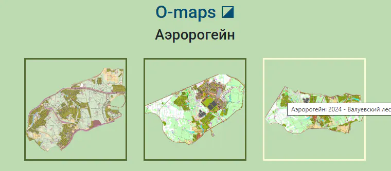

Карточка карты
 Всю информацию об отдельно взятой карте
можно посмотреть на специальной странице - своеобразной карточке каталога. Например, вот страничка карты ЧР'2024 в Петропавловской крепости:
https://o-maps.spb.ru/map-info.html?map=petropavlovka_2024. Заменяя значение параметра map в адресе
на имя файла нужной карты, можно получить ссылку на её страничку. Но можно попасть сюда и проще - щёлкнув по скрепке (🔗) справа от названия карты
во всплывающем окне с информацией о ней.
Всю информацию об отдельно взятой карте
можно посмотреть на специальной странице - своеобразной карточке каталога. Например, вот страничка карты ЧР'2024 в Петропавловской крепости:
https://o-maps.spb.ru/map-info.html?map=petropavlovka_2024. Заменяя значение параметра map в адресе
на имя файла нужной карты, можно получить ссылку на её страничку. Но можно попасть сюда и проще - щёлкнув по скрепке (🔗) справа от названия карты
во всплывающем окне с информацией о ней.
На этой странице - две вкладки: Информация и Карта. Первая из них во многом дублирует всплывающее окошко информации о карте на общей странице, разве что в другом дизайне. На второй можно посмотреть и скачать собственно карту и, возможно, какие-то ещё сопутствующие материалы (карты, информационные бюллетени, протоколы результатов, фотографии для фото-квестов и пр.).
Каталог многодневки
 Список карт любого соревнования, зарегистрированного в каталоге,
можно посмотреть в наглядной форме в виде плиток. Например, по такому адресу откроется страница карт московсой серии Аэророгейн.
Заменяя значение параметра start в адресе на код нужного соревнования, можно получить ссылку на его страничку. Список всех зарегистрированных стартов и их коды
можно посмотреть тут: https://github.com/efradkin/o-maps/blob/main/js/starts.js.
Но можно попасть сюда и проще - щёлкнув по специальной кнопке  в правой части заголовка страницы сводной таблицы
при включении фильтрации по нужному старту.
в правой части заголовка страницы сводной таблицы
при включении фильтрации по нужному старту.
Щёлкнув по любой из плиток каталога многодневки, Вы попадёте на страницу информации о соответствующей карте.